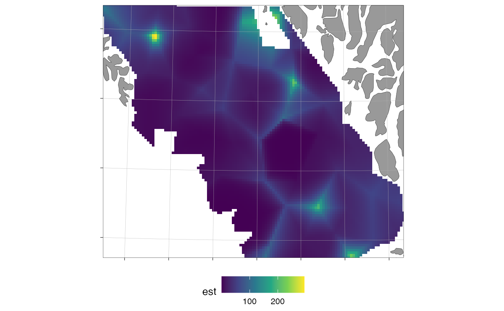

Maps predicted response values from stats::predict() output on a
ggOceanMaps::basemap(), either averaged over time (type = "mean") or
faceted by time (type = "annual").
Arguments
- pred
A prediction data frame from
predict(fit, newdata = ...), containing coordinate columns and the response column. If the response column is on the link scale (the defaultpredict()output, e.g. log density for a log-link family), it can be negative; combine with a suitablefill_limitsif you want to floor the colour scale, or usepredict(fit, newdata = ..., type = "response")for density-scale values.- crs
Coordinate reference system (projected, in metres).
- column
Character. Name of the response column. Default
"est".- type
Character.
"mean"(default) or"annual".- time_col
Character. Name of the time column (for
type = "annual"). Default"year".- transform
Character. Fill-scale transformation, passed to
transforminggplot2::continuous_scale()(the successor to the now-deprecatedtransargument). Default"identity".- fill_limits
Numeric vector of length two (either element may be
NA), passed tolimitsinggplot2::continuous_scale(). Values outside the limits are mapped toNAby ggplot2 and rendered as blank/grey cells. DefaultNULL: the scale's range is taken from the data, so no cells are dropped. Set e.g.c(0, NA)to floor a response-scale plot at zero.- xy_cols
Character vector of the coordinate columns. Default
c("X", "Y").- coord_multiplier
Numeric factor to convert coordinates to CRS units. Default
1000.- base_size
Numeric. Base font size. Default
11.
Examples
# \donttest{
mesh <- sdmTMB::make_mesh(sdmTMB::pcod, c("X", "Y"), cutoff = 20)
m <- sdmTMB::sdmTMB(
density ~ 0 + as.factor(year), data = sdmTMB::pcod, time = "year",
mesh = mesh, family = sdmTMB::tweedie()
)
nd <- sdmTMB::replicate_df(sdmTMB::qcs_grid, "year", unique(sdmTMB::pcod$year))
pred <- predict(m, newdata = nd, type = "response")
plot_prediction_map(pred, crs = 32609)

# }